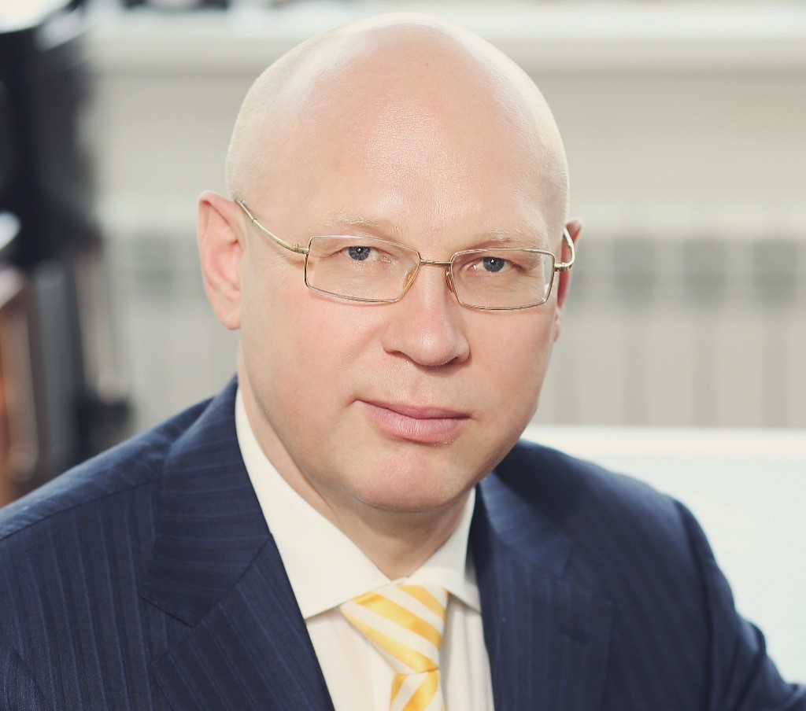

Грибанов Юрий Иванович
Дата рождения: 18 июня 1967 года.
Место жительства: Россия, г. Москва.
Телефон: 8 (985) 555 55 57
Эл. почта: urgriv@gmail.com
Образование:
- Доктор экономических наук. Тема докторской диссертации: - «Цифровая трансформация социально-экономических систем»;
- 15.03.2005 – 03.11.2005: Российская Академия государственной службы при Президенте РФ по программе: «Государственный и управленческий контроль» на ведение профессиональной деятельности в сфере –
Государственного и управленческого контроля;
- 01.09.1989 – 24.06.1993: Киевское высшее военное авиационное инженерное училище, г. Киев;
- 06.08.1984 – 26.06.1987: Пермское военное авиационное техническое училище, г. Пермь.
Профессиональный опыт:
- С 2021 г.: Помощник ректора, руководитель научно-образовательного центра «Цифра» Санкт-Петербургского государственного экономического университета;
- 18.10.2018 – настоящее время: учредитель и научный руководитель АНО ДПО «Академия Цифровой Экономики»;
- 01.10.1994 – настоящее время: учредитель ООО «ЮНИТ-Оргтехника».
- 01.10.2004 – 31.08.2008: руководитель отдела корпоративного строительства и имущественных отношений Федерального агентства по промышленности (Управление радиоэлектронной промышленности и систем управления);
- 06.08.1984 – 24.06.1993: служба в ВС СССР.
Профессиональные качества:
- Профессиональный управленец, управление коллективами до 15 000 человек;
- Эксперт в области управления, макроэкономики, глобализации, ИТ и цифровизации. Автор более 100 научных и популярных статей по вопросам экономики, управления и цифровых технологий;
- Автор книги – «Цифровая трансформация бизнеса».